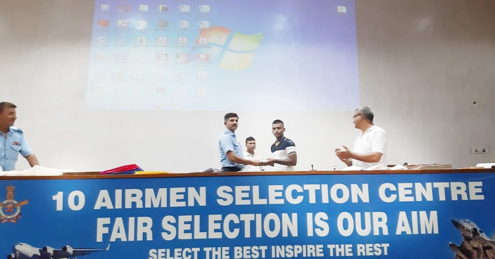
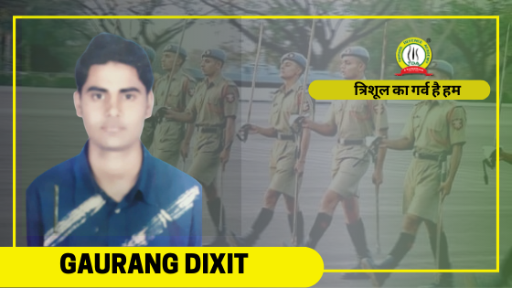

About Us
About us
jai hind Defense Academy, being an ultimate couching center for police job aspirants was started in 2003. From then it proved path for number of students interested in police selections. We feel proud to say that many of our students are recruited in uniform service jobs like Army, Air force, Police etc...
We are also proud about our dedicated, experienced and efficient teaching staff. If any aspirant joins in Jaihind Defense Academy, it meant that his journey towards success started.
success stories :-
Anshuman Tiwari
|  |
Air Force X Group Success : Four Trishulians have created history by clearing Air Force X Group entrance exam and thus joining Indian Air Force at once together.
The four students are namely Anshuman Tiwari, Saurabh Singh, Himanshu Pandey and Abhishek Srivasatava.
Saurabh Singh is the first student to clear the Air Force X Group.He hails from Bamrauli, Allahabad and joined TDA (Trishul Defence Academy) in 2018.
Eventually he was able to crack Air Force X Group and joined IAF (Indian Air Force) in 2019.
His other batchmates Anshuman Tiwari, Himanshu Pandey and Abhishek Tiwari belong to Ballia district and they
also joined jai hind acedemy Defence Academy with the same aim of joining Indian Air Force and wear the blue uniform. |
Gourang Dixit
|  |
Here we are sharing the success story of our one more champion GAURANG DIXIT who got selected in NDA 120th . He was a student of NDA batch of Trishul Defence Academy.
He belongs to Allahabad only.
He is very thankful to Trishul Defence Academy through his words:-
“In Trishul Defence Academy I have learned 4 parameters how to crack NDA with the guidance of Trishul family-
1 Time management.
2 Cooperative Nature.
3 Systematic Planning.
4 Practical Approach. |
|
Home /
Contatc Us